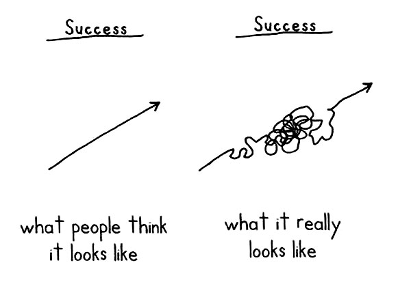

06 de Julio del 2022
Sobre la escritura y los pensamientos
Ya lo decía el famoso escritor Ernest Hemingway: "the first draft of anything is sh*t". Algo de cierto (o muy cierto) deben tener las palabras de un ganador del premio nobel e influencer de la literatura clásica de los Estados Unidos. Llevado a palabras más cotidianas, lo primero que escribes de cualquier tópico es una basura y a mí me parece brillante aceptarlo.
1. El lunes comienzo la dieta
Todos lo hemos dicho o lo diremos alguna vez, debe ser probablemente la mentira más repetida en la historia moderna de la humanidad, pero es un muy buen ejemplo de lo difícil que es para nosotros dar el primer paso. Siempre cuesta, levantarse y ducharse, ponerse la ropa de ejercicio e ir al gimnasio, descargar el paper y comenzar a leerlo en PDF, o crear una página y escribir tu primer blog.
Figura 1 : Shia LaBeouf diciéndolo clarito

Los primeros pasos -al igual que cuando somos bebés- son erráticos y llenos de dificultades. Sin embargo, siempre encontramos una pared o algún familiar que nos apoye en el proceso de aprender a caminar. Vamos conociendo diferentes superficies y complejos escenarios como las escaleras o las sillas de la mesa mientras nuestro cerebro lentamente se va adaptando a los nuevos movimientos. Así mismo, este primer blog es una compilación de pequeños pasos erráticos que ocurren en mi mente, mientras trato de obtener las palabras correctas para articular una narrativa que me permita transmitir lo importante que es simplemente dar el primer paso. Como dirían en Nike: "just do it" o como me gusta más a mi, al estilo del Shia (Figura 1).
2. Lo hiperbólico en la economía
Cuando me preguntan porque decidí estudiar economía nunca encuentro una respuesta que me parezca satisfactoria, generalmente oscila entre "es una ciencia social integral y fascinante que entrega herramientas muy útiles para entender fenómenos multivariables" y "son bacanes las personas economistas". Con el tiempo me he dado cuenta que, en realidad, existieron dos factores de alta influencia en mi decisión: (i) algo me gustaban las matemáticas pero no tenía interés en una carrera de ciencias exactas y (ii) me encantan lo complejo que somos los seres humanos. Y ví en la economía esta oportunidad de mantenerme en un contacto armonioso con dos cosas que me agradan bastante: los métodos estadísticos y las personas.
Volviendo al tema, en 1997 el señor David Laibson escribió un paper llamado "Golden Eggs and Hyperbolic Discounting", donde encontró una forma interesante de plantear y demostrar que no es lo mismo tomar una decisión que tenga implicancias entre hoy y mañana que entre 365 y 366 días más adelante. Sin duda, la impaciencia me golpea mucho más hoy que por esa decisión que debo tomar en el futuro. Laibson plantea que, considerando \(\eta<1\), se puede expresar la utilidad de un consumidor hiperbólico utilizando la siguiente función:
\[U_t=u(c_t)+\eta\sum_{i=1}^\infty \gamma^iu(c_{t+i}) \]
Con \(U_t\) la utilidad que recibe el individuo en el período \(t\) y \(c_{t+i}\) el consumo en \(t+i\) períodos adelante. Es súper elegante lo que plantea Laibson, ya que permite ilustrar y modelar fácilmente lo inconsistentes que podemos llegar a ser en nuestra toma de decisiones. Además, permite estudiar la diferencia entre comprometerse a cumplir un plan inicial (el individuo sofisticado que conoce su proceso) y el ir cambiando el plan todos los días conforme a nuestra conveniencia (el individuo ingenuo e inconsistente dinámicamente).
El ejemplo clásico -o al menos el que yo ví con Eduardo Engel en Macroeconomía- es el de Matt Rabin: el cine cerca de tu casa tiene planificado emitir cuatro películas en cuatro semanas, esta semana será una película fomeque que no te gusta mucho por lo que te entrega una utilidad \(u(c_1)=2\), la semana que viene darán una que te gusta más o menos \(u(c_2)=3\), dentro de dos semanas van a dar una que disfrutarás sin duda \(u(c_3)=5\) y dentro de tres semanas, van a emitir una película de Johnny Depp que te fascinará \(u(c_4)=8\). El problema es que tienes que completar un informe para un trabajo en 4 semanas por lo que te tienes que perder al menos una de las 4 películas.
Supongamos que \(\eta=0.5\) y \(\gamma=1\), cuando comience la primera semana observarás:
\[U_1=u(c_1)+0.5( u(c_2)+u(c_3)+u(c_4)) = 2 + 1.5 + 2.5 + 4 \]
Y decidirás saltarte la película de la semana siguiente, que solo te otorga \(1.5\) en tu utilidad. Pero cuando llega la siguiente semana, observas nuevamente:
\[U_2=u(c_2)+0.5( u(c_3)+u(c_4)) = 3 + 2.5 + 4\]
Y decides saltarte la película de la semana siguiente, que solo te aporta \(2.5\) en tu utilidad. Así, llegas a la semana tres y observas:
\[U_3=u(c_3)+0.5(u(c_4)) = 5 + 4\]
Y decides saltarte la película que más valoras, ya que en la semana siguiente tendrás la obligación de terminar el trabajo. Esto es lo que nos pasa frecuentemente y se conoce como el descontador ingenuo. Un descontador sofisticado se hubiese comprometido a saltarse la película de la segunda semana para hacer el informe.
3. Mañana escribo el primer blog
Y así fue como terminé comportándome igual que un individuo ingenuo. Postergué mucho el primer paso y la redacción de este blog, cuando lo único que necesitaba era simplemente hacerlo ¿o no? La verdad es que sí y no, sí porque sin el inicio de esta escritura no existiría el final y no porque en realidad, no es tan simple como solo hacerlo ya que escribir es pensar.
Figura 2 : gato abrazo

4. La importancia de los sistemas
Así como es necesario dar el primer paso lo antes posible, es necesario también establecer sistemas que te permitan mantener el ritmo del primer paso. Este primer impulso siempre requiere de un esfuerzo extra con el que no contamos todos los días, por eso es que las dietas se posponen para el próximo lunes, porque nos permiten acumular fuerza de voluntad para cuando llegue el día (supuestamente). Si quieres tener éxito (concepto muy subjetivo y que depende en buena parte de tí), es necesario tener un sistema que se adapte a tus condiciones.
Figura 3 : aprendiendo

Supongamos que tu objetivo es disminuir tu consumo de bebidas alcohólicas, aumentar tu rendimiento deportivo, pero sin perder contacto con tus amigos. Un buen sistema relaciona estas componentes de forma armónica, llevando al mínimo la necesidad de tomar decisiones conscientes más allá de la planificación inicial. Por ejemplo, juntarse a compartir en un lugar que esté al aire libre y permita practicar un deporte como voleibol o futbol permitirá obtener lo mejor de ambos mundos. En este caso se trata de un sistema colectivo, pero es posible aplicarlo a detalles pequeños de nuestra vida, que construyen un camino con barreras que evitan que nos desviemos de nuestro objetivo inicial.
En mi caso, esta página es parte de mi sistema que persigue el objetivo de aprender a pensar mejor a través de la escritura y llevar un registro de las reflexiones que pasan por mi cabeza. Este sigue siendo el primer borrador de este blog, así que no te confundas.
Manuel Escobar P.
Contacto
Si te interesa alguno de mis posts, mi perfil o solamente quieres entrar en contacto conmigo. Siéntete libre de enviarme un mensaje acá. Responderé tan pronto como me sea posible.